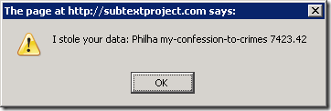

I recently learned about a very subtle potential security flaw when using JSON. While subtle, it was successfully demonstrated against GMail a while back. The post, JSON is not as safe as people think it is, covers it well, but I thought I’d provide step-by-step coverage to help make it clear how the exploit works.
The exploit combines Cross Site Request Forgery (CSRF) with a JSON Array hack allowing an evil site to grab sensitive user data from an unsuspecting user. The hack involves redefining the Array constructor, which is totally legal in Javascript.
Let’s walk through the attack step by step. Imagine that you’re logged in to a trusted site. The site makes use of JavaScript which makes GET requests to a JSON service:
GET: /demos/secret-info.json
that returns some sensitive information:
["Philha", "my-confession-to-crimes", 7423.42]
Now you need to be logged in to get this data. If you go to a fresh browser and type in the URL to /demos/secret-info.json, you’ll get redirected to a login page (in my demo, that’s not the case. You’ll have to trust me on this).
But now suppose you accidentally visit evil.com and it has the following scripts in the <head /> section. Notice the second script references the JSON service on the good site.
<script type="text/javascript">
var secrets;
Array = function() {
secrets = this;
};
</script>
<script src="http://haacked.com/demos/secret-info.json"
type="text/javascript"></script>
<script type="text/javascript">
var yourData = '';
var i = -1;
while(secrets[++i]) {
yourData += secrets[i] + ' ';
}
alert('I stole your data: ' + yourData);
</script>When you visit the page, you will see the following alert dialog…

…which indicates that the site was able to steal your data.
How does this work?
There are two key parts to this attack. The first is that although browsers stop you from being able to make cross-domain HTTP requests via JavaScript, you can still use the src attribute of a script tag to reference a script in another domain and the browser will make a request and load that script.
The worst part of this is that the request for that script file is being made by your browser with your credentials. If your session on that site is still valid, the request will succeed and now your sensitive information is being loaded into your browser as a script.
That might not seem like a problem at this point. So what if the data was loaded into the browser. The browser is on your machine and a JSON response is not typically valid as the source for a JavaScript file. For example, if the response was…
{"d": ["Philha", "my-confession-to-crimes", 7423.42]}
…pointing a script tag to that response would cause an error in the browser. So how’s the evil guy going to get the data from my browser to his site?
Well It turns out that returning a JSON array is valid as the source for a JavaScript script tag. But the array isn’t assigned to anything, so it would evaluate and then get discarded, right?. What’s the big deal?
That’s where the second part of this attack comes into play.
var secrets;
Array = function() {
secrets = this;
};
JavaScript allows us to redefine the Array constructor. In the evil script above, we redefine the array constructor and assign the array to a global variable we defined. Now we have access to the data in the array and can send it to our evil site.
In the sample I posted above, I just wrote out an alert. But it would be very easy for me to simply document.write a 1 pixel image tag where the URL contains all the data in the JSON response.
Mitigations
One common mitigation is to make sure that your JSON service always returns its response as a non-array JSON object. For example, with ASP.NET Ajax script services, they always append a “d” property to the response, just like I demonstrated above. This is described in detail in this quickstart:
The ASP.NET AJAX library uses the "d" parameter formatting for JSON data. This forces the data in the example to appear in the following form:
{"d" : "bankaccountnumber", "$1234.56" }
Because this is not a valid JavaScript statement, it cannot be parsed and instantiated as a new object in JavaScript. This therefore prevents the cross-site scripting attack from accessing data from AJAX JSON services on other domains.
The Microsoft Ajax client libraries automatically strip the “d” out, but other client libraries, such as JQuery, would have to take the “d” property into account when using such services.
Another potential mitigation, one that ASP.NET Ajax services do by default too, is to only allow POST requests to retrieve sensitive JSON. Since the script tag will only issue a GET request, a JSON service that only responds to POST requests would not be susceptible to this attack, as far as I know.
For those that keep track, this is why I asked on Twitter recently how many use GET requests to a JSON endpoint.
How bad is this?
It seems like this could be extremely bad as not many people know about this vulnerability. After all, if GMail was successfully exploited via this vulnerability, who else is vulnerable?
The good news is that it seems to me that most modern browsers are not affected by this. I have a URL you can click on to demonstrate the exploit, but you have to use FireFox 2.0 or earlier to get the exploit to work. It didn’t work with IE 6, 7, 8, FireFox 3 nor Google Chrome.
Take this all with a grain of salt of course because there may be a more sophisticated version of this exploit that does work with modern browsers.
So the question I leave to you, dear reader, is given all this, is it acceptable to you for a JSON service containing sensitive data to require a POST request to obtain that data, or would that inspire righteous RESTafarian rage?
Hey, if you liked this post, consider sharing it with others via a